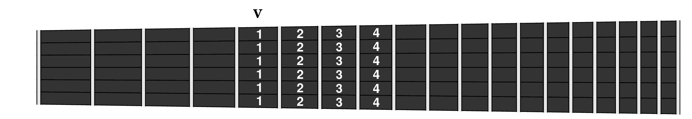
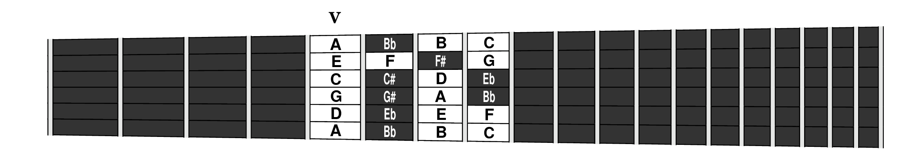
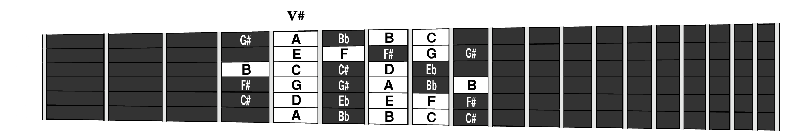
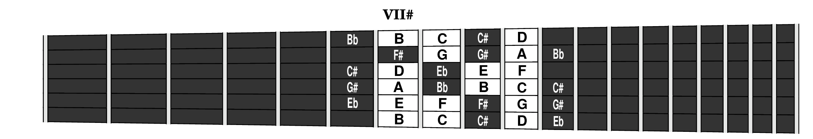
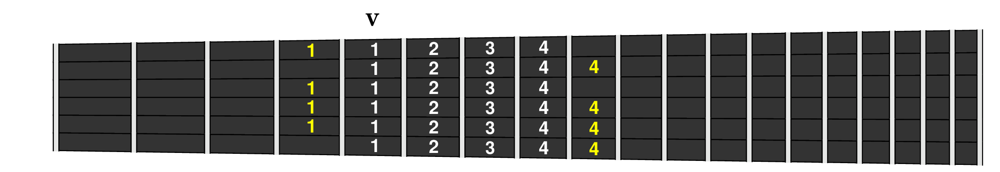

It's no surprise that it's easier to play a particular piece in some positions than in others. The goal here is to quantify that observation so that students and instructors can make more informed choices of which positions are best suited for playing a particular exercise. It also helps this book present the easier exercises within a group before the harder ones.
We will refer to the following sample exercise repeatedly in this discussion. It's short and familiar, but exhibits considerable variation in complexity across different positions.
Notice that this exercise has zero (0) complexity in first position but maximal complexity (9) in the sixth and eleventh positions. Even fifth position looks surprisingly complex (4).
Because everything in this book has been typeset in the Lilypond music notation language, all the music is defined in a plain text file, making it readily available for reading and analysis by other software. For example, the music in the exercise above was defined by the following text:
To compute metrics on such exercises, a custom Perl script was written to interpret the Lilypond text file and follow the progression of each piece note-by-note. By looking at the highest and lowest notes in a particular exercise, the script could determine all positions on the neck in which that exercise could be played. And for each such position, it could then figure out which combination of string and left-hand finger were needed to play every note.
All that remains is teaching the Perl script what makes some melodies more awkward for a human hand to play, and how to quantify those complexities into computable measures that can lead to an overall complexity grade for each position in which an exercise is theoretically playable.
While you're learning the notes in a new position, you'd like to choose music that allows you to keep your left hand essentially in the same place. That way you can keep your eyes on the music without being tempted to look at your fingers on the fretboard.
Ideally the music would let your fingers follow the simple fingering pattern illustrated below, where each finger plays just the notes in it's own “slot”.
While this ideal situation is present in many of the exercises in this book (e.g. any diatonic exercise in seventh position, or any pentatonic exercise in fifth position, or any exercise with a complexity grade of “0”), the general situation is not so ideal.
Anyone who has tuned a guitar using adjacent strings knows there are five chromatic steps between most adjacent strings, so the four finger pattern shown above is going to leave some gaps in the chromatic scale. Four, to be exact.
For example, if you look at the notes available under the four fingers shown above, and follow the chromatic scale from the low A on the sixth string to the high C on the first string, you'll discover the four gaps: C♯, F♯, B and G♯.
To fill these four gaps, you need to stretch momentarily to the next higher or lower fret, as shown below. The same notes are available in both places but shifted over by a string:
Except for first position, where you get the open string notes for free, and the highest positions, where you run out fretboard, every position has exactly four such chromatic gaps. And they're located in exactly the same relative spatial locations. They differ only in which four notes happen to be at those locations.
Even our beloved seventh position has four gaps at these places. It's just that none of them are natural notes, as you can see below:
To fill in these chromatic gaps you have to go beyond the ideal fingering pattern and use the stretch fingering pattern shown below:
This pattern applies to all positions from the second to the fourteenth. It defines the default finger assignments for playing any melody in those positions when the goal is learning the notes of the fretboard in those positions. The chromatic gap notes shown in yellow can be played either in the high position with finger 4 or low with finger 1.
Using these fixed finger assignments as a training rule (“finger 3 plays all the notes in the third slot”) adds a helpful mnemonic when learning the fretboard at a particular position (“that's a third finger/slot note”) even when you later move on to more flexible fingerings (“hmmm, I'll have to use fingers 3 and 4 to play those two third-slot notes”).
Even when you're just playing one note at a time and following a fixed fingering assignment, there are multiple ways in which left-hand fingerings can become awkward.
The Perl script counts three such sources of complexity and compares them to the total number of notes to get an overall Score for the average complexity per note, and then maps that into to an integer Grade on the scale from 0 to 9, with 0 meaning zero complexity.
Here are the definitions of the various counts; examples are given in later sections.
Although rhythm and tempo are also significant sources of sight reading complexity, they are issues mainly for the right hand and are therefore not included in these metrics aimed at grading positions for the left hand.
The largest discriminator between different positions is in how many of the notes require stretching to neighboring positions, i.e. Count A.
For diatonic music in C we've already seen that positions I and VII never require stretching out of position, so count A will be exactly 0 for our sample exercise in those positions.
We also expect that position V will require a stretch to reach the B in the middle of the staff, and indeed our example shows count A being incremented by 1 on those two notes:
Position VI has the worst reputationin the key of C with all four of its chromatic gaps on natural notes: low D, G, C and high A. But only two of those notes (G and C) are present in our example. Notwithstanding, there are still 10 counts in this small example. Note that the repeated eighth notes only increment on their leading note, since the algorithm looks just at changes in left hand fingering.
Thus far count A is clearly showing its preference for positions I and VII (count = 0) compared to position V (count = 2) and position VI (count = 10).
Besides stretching out of position, the next biggest hassle of playing a melody in a fixed fingering pattern is when the same finger has to carry the melody to a different string on successive notes, i.e. Count B.
Although it didn't matter to count A whether a stretch was to the higher position (finger 4) or the lower position (finger 1), those finger number differences can affect count B, as we'll see below. In such cases the Perl script always assumes for simplicity that the stretch uses finger 4.
That turns out not to affect count B when our sample exercise is played in position V. You can see below that all the counts in this case are traceable to G, C and E all being played by finger 1 on the fifth fret, without stretching. The first count is when going from G to C, the second is going the other way, and the last two are from E to C.
Obviously this is a good example of why experienced guitarists don't adhere to rigid fingering assignments. They'd handle this small complexity with a bar or roll of the first finger, or a scrunch with another finger. But count B is here to warn the student that this complexity exists.
Even though the two instances of a B note in the above example are stretches for position V, they don't contribute to count B in this case regardless of which finger, 1 or 4, is used. In both instances they follow a C being played by finger 1, so obviously it doesn't count if finger 4 is used on the B (not the same finger). But even if finger 1 is used for both the C and the B, the fact that they are on the string means there is no string jump and the result is still no count B.
When our exercise is played in position VI (below), G and C are now stretch notes (ambiguously finger 1s on fret 5 or finger 4s on fret 10) while B and E are not (they're definite finger 4s on fret 9).
In this case, the stretch note ambiguity matters somewhat. It doesn't affect the transitions between G and C since they're on adjacent strings at the same fret whether the stretch goes high or low. But it does affect the transitions from E to C since E is finger 4 either way but C is not.
You might notice that the sequence of four notes (G C B G) around the B half note are all assumed to be played by finger 4, yet the count increments only twice. It doesn't increment when going from C to B because that's a simple slide on the same string (zero string jump).
This example also demonstrates that count B is incremented when the same finger stretches to a different fret. That happens, assuming we stretch low with finger 4, in the transition from B to G (9th and 10th frets) and from E to C (also on the 9th and 10th frets).
A melody can gradually walk from one edge of the fretboard to the other without inconveniencing the player, but large jumps across are another matter, hence Count C.
In our example, the octave jump up to high G gets one count in positions where those notes are three strings apart, as is the case in position VI below, but not in position V where they are only two strings apart.